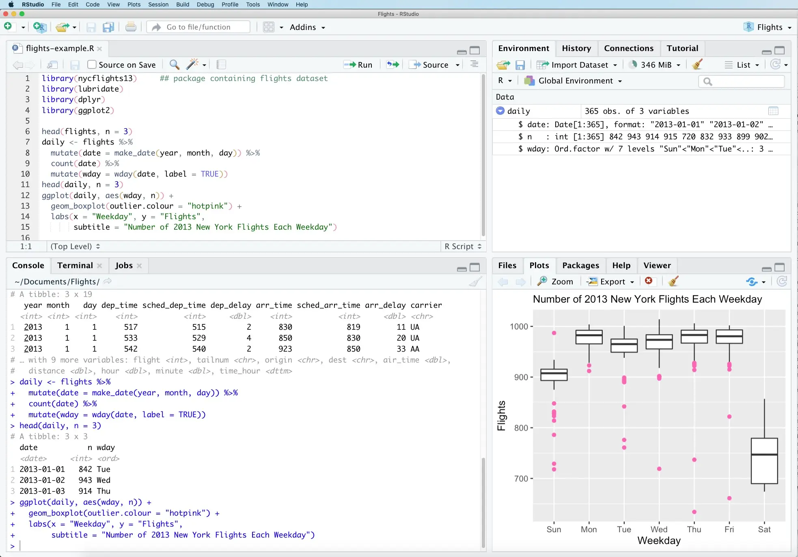
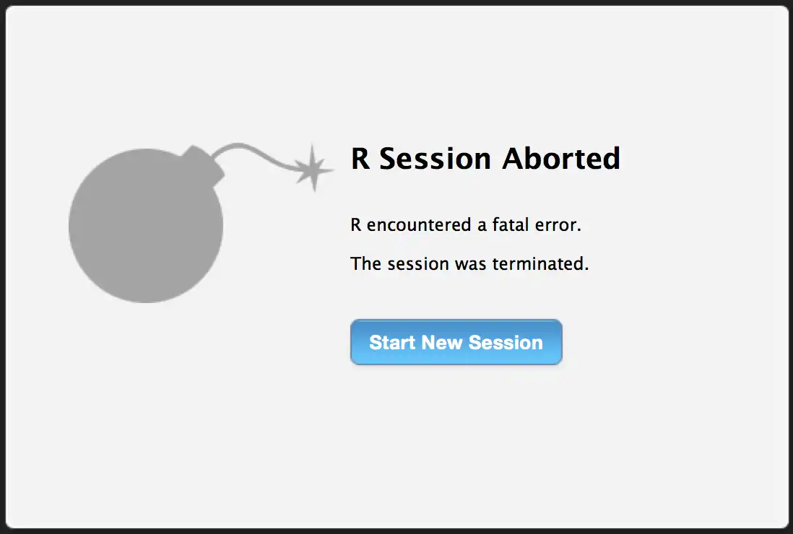
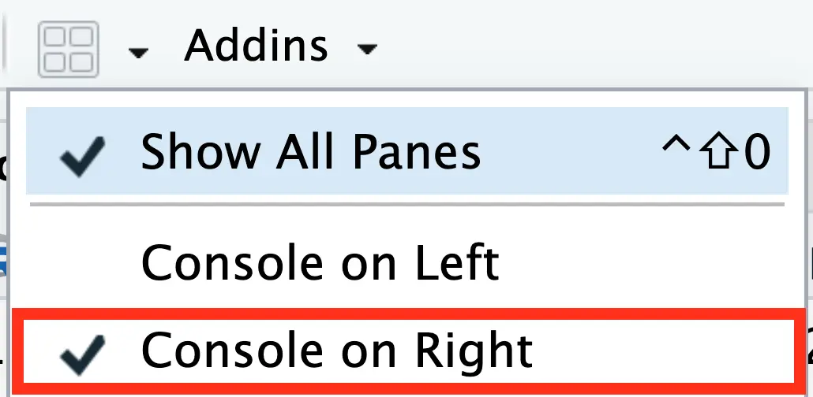
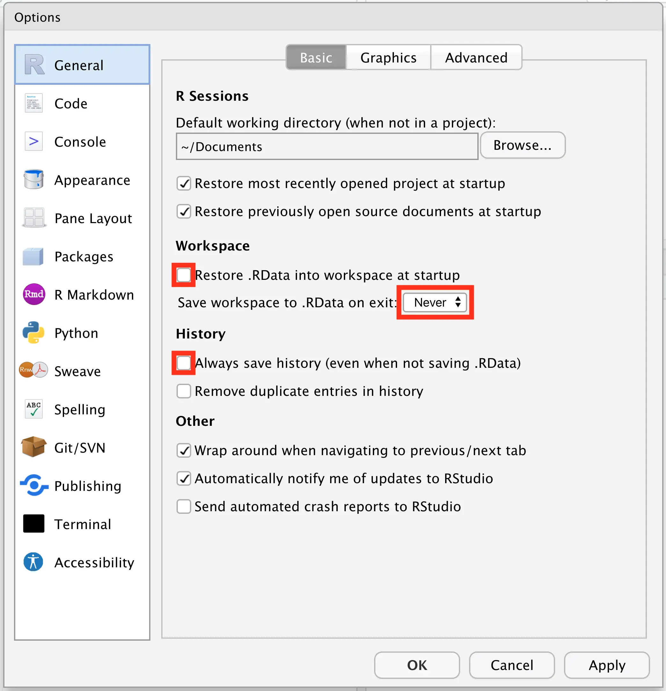
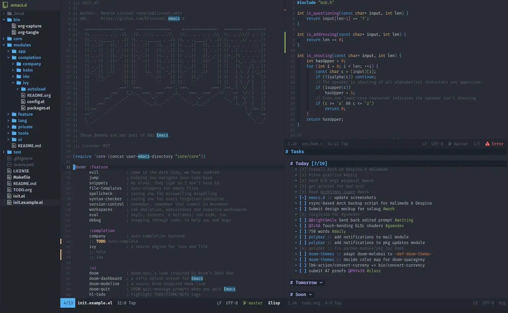

2 Editors
As discussed in Chapter 1, coding doesn’t happen in a vacuum. One important part of a programmer’s workflow is their code editor. In short, an editor allows you to write computer programs, but they can also include things like debuggers, compilers, interpreters, syntax highlighters, and much more.
The choice of editor is up to the developer. Some enjoy having more tools at their disposal, while other prefer simplicity and portability. When talking about R, there are four popular choices: RStudio, VS Code, Emacs, and Neovim.
In the coming sections I’ll talk about each of them, their advantages and disadvantages, as well as a few tips on how to make the most out of their features.
2.1 RStudio
RStudio is, by far, the most popular editor for R. It was first released in 2011 and is maintained by RStudio, PBC (now Posit, PBC), a company whose contribution to the R community is hard to overestimate.
{kind=link}
Unlike the other software applications featured here, RStudio was made for R and can be considered a full Integrated Development Environment (IDE). For the majority of its life, it only supported direct code execution and extensions associated with the language, e.g., RMarkdown and Shiny. This only changed in the past few years with additional support for Python and Jupyter notebooks through the reticulate package.
2.1.1 Pros and cons
Given its dedication to the R environment, RStudio is probably the easiest to use. There is no setup and no extensions to install; it simply works.
Its integrated R console allows you to, out of the box, execute code directly. The fact that the interface is so tightly coupled with R means that you get features that you basically can’t get anywhere else: RMarkdown integration, memory monitoring, database connections, etc.
RStudio is also deeply connected to its company’s other products. One of this IDE’s best features is its web version called RStudio Server; there is a free and a paid version, but both allow you to basically access a remote server through RStudio’s interface. This means that you can use the processing power of a different machine and access it via the web on your local computer.
And I haven’t even scratched the surface of RStudio’s integrations! There is also Team, Workbench, Connect and Package Manager, enterprise solutions that can be accessed right through the IDE. Last but not least, Shinyapps.io, RStudio’s Shiny hosting solution, gets a dedicated one-click deployment feature on RStudio.
However, despite all of these facilities, some people would argue that RStudio is lacking in customizability and extensibility. At the time of writing, its interface is stuck as quadrants, each with multiple tabs that you can’t close or rearrange. The way content is structured is, in general, a little clunky, with a lot of space devoted to tools very few people use.
If you use RStudio for as long as I have, you’ll also catch on to a handful of minor quality of life issues. Here is a list of a few drawbacks of this IDE that add some friction to one’s development workflow:
The file explorer is slow and hard to use if you want to move more than one file back and forth.
Sometimes printing large objects makes the console stop responding and, given RStudio’s intimate connection with its REPL, only by quitting the full application can you stop this kind of process.
Diagnostics have been cluttering local R sessions since 2021, which isn’t necessarily a problem, but some novices might think that there is something wrong with their IDE.
You still can’t use multi-core processing via forking with furrr and friends because, at the moment, it is considered unstable.
Again because of its connection to the console, if R encounters a fatal error, then the whole IDE crashes.

Getting rid of all of these problems obviously comes at a price that most people aren’t willing to pay. RStudio’s ease of use is a big advantage for the majority of R programmers.
2.1.2 Tips
As explained before, RStudio is the most plug and play of all four editors and, if you decide to use it, there is very little you can do to improve it. This doesn’t mean, however, that you should use it with all of its factory defaults. Most notably, RStudio comes out of the box with the REPL console below the file editor, which is not most peoples’ preference. In order to change this, click the windowed button at the top of the interface and select Console on Left. You’ll thank me later.

If you are a person with particular concerns about the reproducibility of your analyses, I suggest you also change another setting in RStudio: turn off automatic .RData saving.
If you don’t know what this hidden file is, it basically stores the data you use (also called your workspace) during a coding session. While this seems very convenient, it disincentivizes writing reproducible and resilient code. Don’t believe me? Here is the description of usethis::use_blank_slate() a function (made by the very people at RStudio!) that disables .RData:
[…] However, long-term reproducibility is enhanced when you turn this feature off and clear R’s memory at every restart. Starting with a blank slate provides timely feedback that encourages the development of scripts that are complete and self-contained. […]
If you don’t want to use usethis::use_blank_slate(), you can also change this setting manually in RStudio. In Tools > Global Options…, turn off Restore .RData and Always save history; additionally, set Save workspace to “never”.

Important
If you’re a beginner in the world of R, you’re welcome to stop this chapter here and come back when you have a couple years experience. RStudio is the best editor for novices and the other options might actually make it harder for you to learn R.
2.2 VS Code
Visual Studio Code, also known as VS Code, is the new kid on the block. Released by Microsoft in 2015, it quickly became the most popular code editor in the world: it went from being used by 7% of developers in 20161 to 74% by 20222.
When compared to RStudio, VS Code is much less plug and play. By default it doesn’t come bundled with tools for programming in R and you might have to learn some shortcuts, but it does have its benefits. So much so that RStudio Workbench allows you to choose between their own IDE and VS Code when creating a new project.
2.2.1 Pros and cons
In my opinion, the biggest argument in favor of using VS Code is its flexibility. You can “pop the hood” of the editor and edit every minute setting of its interface, creating new shortcuts and snippets, editing the configuration files directly, and even create extensions that enhance your development workflow.
Unlike RStudio’s addins, VS Code’s extensions can profoundly alter your development environment. There is an extension marketplace through which you can download anything from aesthetic themes to debuggers, from spell checkers to support for additional languages. While I’m writing this very sentence, I have multiple extensions working on the background: one to automatically format paragraphs to my desired line width, one to fix my spelling mistakes, and one for Quarto code completion (made by RStudio!).
VS Code’s interface is also extremely flexible. Text files, R consoles, terminal emulators, plot viewers, and web browsers (e.g. Shiny preview windows) are all tabs that can be arranged however you like. On the left side you also get a powerful file explorer and shortcuts an integrated git client, a global search tool, and every extension you choose to pin (e.g. R’s workspace viewer).
I personally chose VS Code as my daily driver, but it is not without its flaws. First and foremost, it does not come with R support out of the box and it is up to each individual developer to install the necessary extensions to make it work. There is an official tutorial, but, in order to get the most out of VS Code, you really must follow the extra steps described at the end of the Getting Started section; this will, however, involve installing a new R console through Python and editing your .Rprofile.
Unlike RStudio, VS Code’s R console is not integrated to the rest of the editor. This solves the issues with multi-core processing and full crases, but it creates other problems; for one, you have to start the R console every time you open VS Code, which can get boring pretty fast. The plot viewer is also a little clunky, so you have to be smart with your window management if you don’t want gigantic plots taking up half of your screen.
To sum up, VS Code is a modern and customizable editor that can work with any language you can imagine. This wholistic approach means that you get really cool features, but also that you lose some tighter integrations which RStudio alone can offer.
2.2.2 Tips
As alluded to above, you should follow VS Code’s tutorial on how to setup support for R. Make sure to read the full instructions for your operating system because they are different for each OS (Windows, macOS, and Linux)!
You might also want to configure some settings and shortcuts; this is not trivial, but it will help with some minor hiccups for R users. First, open your Command Palette with Ctrl+Shift+P (Cmd+Shift+P on Mac) and select the Preferences: Open User Settings (JSON) command. Your settings.json should open and I suggest you replace its contents with the following, making sure not to remove the settings you have already added during radian’s setup:
{
"editor.minimap.enabled": false,
"workbench.startupEditor": "none",
"editor.tabSize": 2,
"files.defaultLanguage": "r",
"terminal.integrated.defaultLocation": "editor",
"diffEditor.ignoreTrimWhitespace": false,
"files.trimTrailingWhitespace": true,
"editor.rulers": 80,
// Radian setup! Keep yours as is!
"r.rterm.mac": "/opt/homebrew/bin/radian",
"r.bracketedPaste": true,
"r.plot.useHttpgd": true
}On the Command Palette again, select the Preferences: Open Keyboards Shortcut (JSON) command. It will open a file where you can define some shortcuts that you like. Mine looks like this (make sure to swap cmd with ctrl wherever necessary):
[
{
"key": "cmd+shift+m",
"command": "type",
"args": { "text": " |>" },
"when": "editorTextFocus && editorLangId == 'r'"
},
{
"key": "alt+-",
"command": "type",
"args": { "text": " <- " },
"when": "editorTextFocus && editorLangId == 'r'"
},
{
"key": "shift+cmd+l",
"command": "r.loadAll"
}
]2.3 Emacs
Emacs (short for “Editor MACroS”) is not a single text editor, but in fact a family of them. There are many Emacs variants, as they’re called, but the one I’m going to talk about is GNU Emacs, which was released in 1985 and is to this day the most common implementation of Emacs.
{kind=link}
This software is old, let’s get that out of the way, but it doesn’t mean that it’s not good. Emacs is still being actively developed and has a devoted community of users that swear by its superiority over all other text editors.
2.3.1 Pros and cons
In the section above, when talking about VS Code, I described it as extensible. Emacs is off the charts. People who don’t like Emacs say that it is “a great operating system, lacking only a decent editor”. You can add so much stuff to it that it becomes barely recognizable.
This is both a pro and a con. You can configure your Emacs to your heart’s content, but this also means that it can get pretty hard to get help online when something breaks. If you decide to try out Emacs, first you must decide how much you like to tinker with obscure settings and arcane Lisp.
Like VS Code, Emacs needs an add-on in order to support R. This add-on, called Emacs Speaks Statistics (ESS), allows you to use Emacs much like you would RStudio: it has a file editor, a console, a documentation pane, and an environment explorer. The connection between the interface and the R process, however, is not as tightly coupled as RStudio’s; in Emacs you don’t have to worry about crashing the whole program if you do something wrong inside R.
Overall, Emacs is light, widely supported, customizable, and solid. It is not, however, simple. For example, Emacs has a strong reliance on modifier keys, meaning that every shortcut must be prepended by Escape, Meta, Alt, Control, and/or Shift; this phenomenon is so prevalent that people coined a specific term for RSI caused by using your pinky finger to access modifier keys too often: Emacs pinky.
Below you’ll find a short example (adapted from here) of how one can use ESS to analyze some data. Note that every C- and M- is short for Ctrl+ and Meta+.
### Data Analysis Example
## Open the file you want
C-x C-f myfile.R
## Edit as appropriate, then start and switch to an *R*
## process buffer
C-c C-z
## A new buffer *R* will appear. R will have been started
## in this buffer. The buffer is in iESS [R] mode.
## Return to the script
C-z
## Send current region (if active), or function, or
## paragraph at point
C-M-x
## Send current region or function or paragraph and step
C-c C-c
## Send current line
C-RET
## Or load the entire buffer
C-c C-l
## Save the revised myfile.R
C-x C-s.
## Save the entire *R* interaction buffer
C-x C-s.
## Search for documentation
C-c C-d
## Investigate available ESS commands
C-c C-hYet, people still love Emacs. The fact that you can still pick up a tutorial from the 90’s and have it still work is just plain awesome. Emacs’ mix of reliability and extensibility makes for an intoxicating brew.
2.3.2 Tips
The first thing you’ll want to do in order to learn how to use Emacs and ESS is read ESS Intro’s tutorials. They have a collection of presentations and YouTube videos that help you get started with R in Emacs. They even have an introduction to Emacs itself which might come in handy for the uninitiated.
Another aspect of Emacs that might interest you is the distributions that try to get rid of the flood of modifier keys that most users have to deal with. Doom Emacs and Spacemacs are two noteworthy initiatives.

These more modern “alternatives” use Vim keybindings (which will be discussed below) and substitute modifier keys with combinations of other keys that are easier to access. They also come packed with presets that most users will want to configure anyway, cutting a lot of the setup out of the learning process.
2.4 Neovim
Neovim is the successor to Vim (which is itself a successor to vi). Launched in 2015, it attempts to fix the problems found in its predecessors, reinvigorating vi’s side in the editor war.
Again, like VS Code and Emacs, support for R in Neovim is dependent on plugins that extend its functionalities. This is for sure the most bare-bones of all editors discussed here, but you’ll for sure look like a hacker while using it.
2.4.1 Pros and cons
vi was launched in 1976, the same year as Emacs. It has gone through many versions and iterations, arriving in its current form only a few years ago, but this doesn’t mean that it isn’t robust or solid. Most of the changes from Vim to Neovim happened in the plugin and configuration systems; most shortcuts and functionalities remain the same since 1991.
While not as extensible as Emacs, Neovim also has a vibrant add-in ecosystem. Nvim-R is the plugin that enables R support on the editor and it works basically in the same way as all other extensions discussed in this chapter: it adds a console, a documentation viewer, and a environment explorer to the standard file editor.
As one can probably tell from the image above, Neovim runs on the terminal. It is the lightest and fastest of all four editors, working perfectly via SSH connections and on slower machines.
Neovim’s downsides mostly stem from its focus on minimalism. Unlike Emacs, which uses modifier keys to access shortcuts, Neovim uses something called modes. In its default mode, every key on the keyboard has a special meaning and can be combined with other keys to create complex and powerful commands. In order to actually edit the file, you must use the i key and enter “insert mode”.
Most of the time, users are constantly switching from mode to mode and taking advantage of its many, many keybindings. While this strategy is easier on the fingers than Emacs’ modifiers, it has a significantly shallower learning curve. A common joke among novices is that it’s easier to turn off your computer than quit Vim/Neovim3.
How much speed and memory usage matters is up to the individual developer. Neovim might be hard to get into, but most users argue that the productivity gain from its keybindings is worth the hassle.
2.4.2 Tips
Of all four applications, Neovim is probably the least common when talking about R development. There isn’t much online that can help you with Nvim-R besides the official documentation. Just make sure you have installed Neovim correctly first!
A really useful thing to do before jumping into Neovim is learning the keybindings with Vim Adventures. There are also many cheat sheets that can help in the process. Remember that almost all commands are the same in both Neovim and Vim, so you might find better online documentation when searching for “vim” instead of “neovim”.
The shortcut to quit Vim/Neovim is
:wq.↩︎